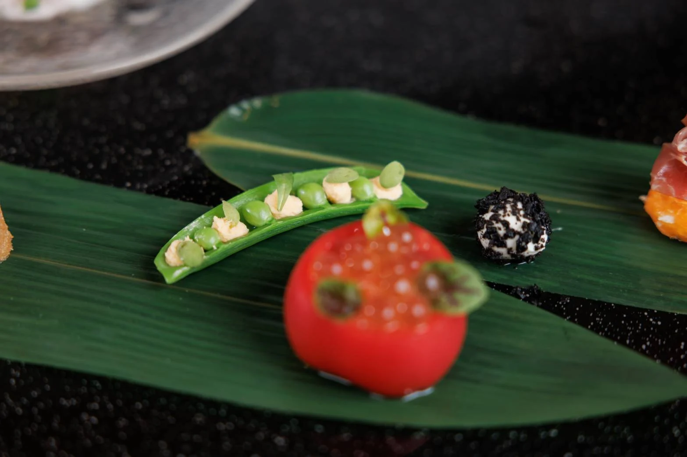

食卓のこと、
お話ししましょう。
レストランのご予約、ケータリングのご相談、学校での授業・出張職場体験について。お電話にてお気軽にお問い合わせください。
- 所在地
- 〒297-0026
千葉県茂原市茂原553-5
Googleマップで見る - 営業時間
- ランチ 11:00–15:00 (ラストオーダー 14:30)
ディナー 18:00–22:00 (ラストオーダー 21:30) - 定休日
- 不定休（予約状況による）
- ご予約
- 完全予約制・前日までにお電話で
OTTO
MOBARA, CHIBA
〒297-0026
